Background
A wing that flips upside down mid-straight - and the loads that come with it
An F1 rear wing is a set of inverted airfoil elements that generate downforce for grip through high-speed corners, at the cost of drag that slows straight-line speed (FD = ½ρ∞V∞²Cl(c·b), the same Kutta-Joukowski relationship governing any lifting surface). The standard Drag Reduction System (DRS) addresses this trade-off by rotating the top flap 40-50° open on straights, cutting drag 20-25% and gaining roughly 10-12 kph - then closing again before the next corner.
For the 2026 season, Ferrari introduced a fundamentally different mechanism - nicknamed the "Macarena" wing - that rotates the flap up to 230°, fully flipping it upside down on straights rather than just cracking it open. That's a dramatically larger and more aggressive actuation than conventional DRS, and it raises an obvious engineering question: what does the flap - and its hinge - actually experience while it's mid-rotation, not just at the two endpoint states? This project modeled and simulated that actuation sequence in ANSYS Fluent to characterize the transient aerodynamic loading Ferrari's mechanism has to survive that a conventional DRS flap does not.
CAD Modeling
Built from NACA airfoils, extracted to 2D profiles for CFD
The rear wing assembly - mainplane, middle flap, and top (rotating) flap - was modeled in Onshape using inverted NACA airfoil sections: NACA 7412 for the mainplane, NACA 4412 for the middle flap, and NACA 6409 for the top flap, matching the multi-element geometry visible on the real car. The 3D assembly was used to establish realistic chord lengths, stagger, and gap/overlap between elements, then the airfoil profiles were extracted into DWG format for use as 2D CFD geometry in SpaceClaim and Fluent - since a full 3D transient rotating-mesh simulation was outside the scope of a single-quarter course project (see Limitations).
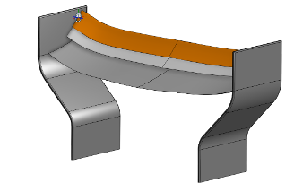
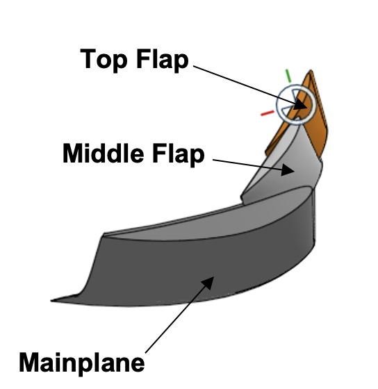
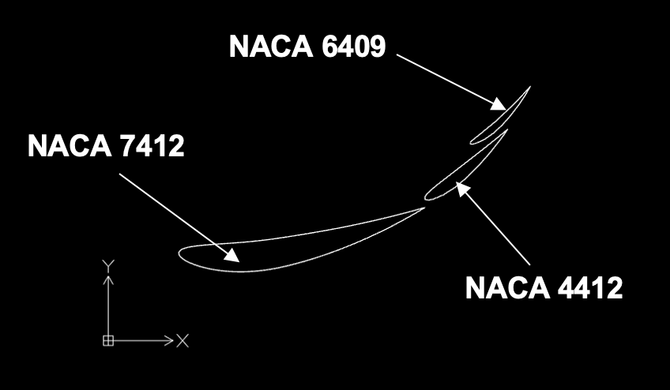
Full 3D assembly (left) - labeled elements: mainplane, middle flap, top flap (center) - extracted 2D profiles used for CFD: NACA 7412, 4412, 6409 (right)
Steady-State Setup & Results
Three fixed positions bound the aerodynamic envelope
Before simulating the actuation itself, three fixed-position steady-state cases were run to bound the problem: the wing fully closed (unopened), rotated 130° (a mid-rotation snapshot), and rotated the full 230° (final DRS-open position). Each used a triangular mesh across the fluid domain, refined to 1×10⁻⁴ m element size near the airfoil walls with boundary-layer inflation, and 5×10⁻⁴ m along the outer domain edges. The domain itself was built as a rectangular enclosure rather than a C-mesh, specifically to better replicate wind tunnel boundary conditions and reduce artificial boundary effects on the solution.
A mesh sensitivity check was run between the initial mesh and this refined version: the flow topology - separation location, wake shape, contour patterns - held consistent between the two, confirming the flow field itself is effectively mesh-independent at this level of refinement. Force magnitudes, however, showed measurably more sensitivity to rotation angle under the refined mesh, since improved near-wall resolution more accurately captures how the boundary layer and pressure distribution shift with rotation - a useful, honest distinction between qualitative and quantitative mesh convergence.
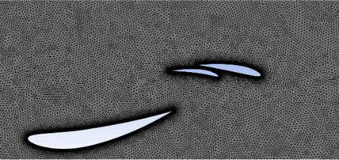
Refined triangular mesh with boundary-layer inflation at the airfoil walls
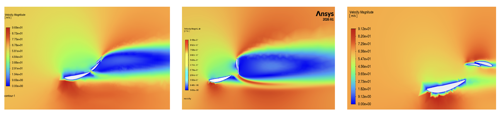
Velocity magnitude - unopened, rotated 130°, rotated 230°. The wake narrows and speeds up dramatically as the flap opens, consistent with reduced blockage.
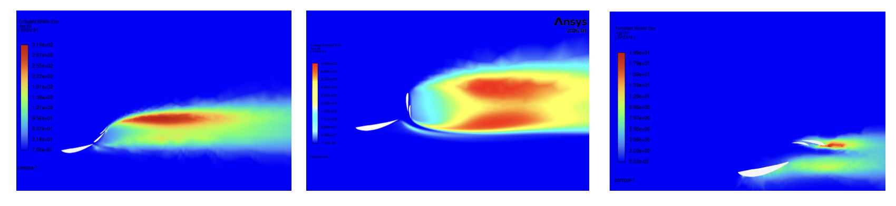
Static pressure - the strong low-pressure region under the mainplane (generating downforce) shrinks as the flap opens and the wing sheds its lifting-surface behavior.
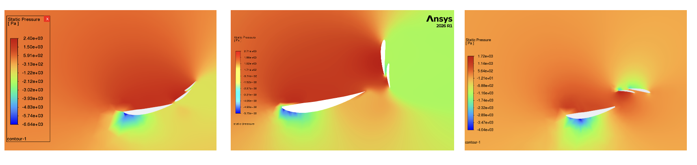
Turbulent kinetic energy - a large, energetic wake behind the closed wing collapses into a small, localized region once the flap is fully open at 230°.
| Configuration | Drag Force (N) | Downward Force (N) |
|---|---|---|
| Unopened wing | 427 | 2105 |
| Rotated 130° | 740 | 1176 |
| Rotated 230° (fully open) | 65 | 612 |
Fully opening the flap to 230° cuts drag by roughly 85% relative to closed (427 N → 65 N), at the cost of about 71% of the downforce (2105 N → 612 N) - the expected trade-off, and directly consistent with the ~20-25% drag reduction and 10-12 kph speed gain figures reported for conventional DRS. Notably, the intermediate 130° position produces the highest drag of the three states (740 N) - worse than either endpoint - a strong early signal that the mid-rotation transient, not the open or closed states, is where the real aerodynamic risk lives.
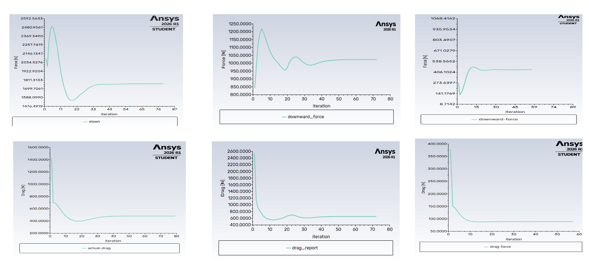
Force convergence - drag and downward force settle to stable values within roughly 40-80 iterations for each configuration, confirming steady-state convergence before results were extracted.
Transient Analysis - DRS vs. Macarena
Steady-state shows the endpoints. Transient shows what the hinge survives to get there.
The core of this project was a transient, sliding-mesh CFD simulation directly comparing the actuation sequence of a conventional 40-50° DRS flap against Ferrari's 230° Macarena rotation - modeling the full motion, not just the before/after states.
Domain setup: two separate fluid domains were built in SpaceClaim - a static global domain and a smaller rotating domain enclosing just the top flap - each meshed independently and coupled through a defined mesh interface. The rotating domain used a noticeably finer mesh than the global domain specifically to resolve the more chaotic, separated flow generated during rotation.
Solver setup: pressure-based transient solver with the k-ω SST turbulence model, 65 m/s inlet velocity (representative of typical car speed when DRS/Macarena is actuated), and a time-and-angular-velocity profile imported directly into Fluent to drive the rotating domain's motion. The 3-second simulated sequence stepped through: 0.5 s stationary → 0.5 s opening → 1 s stationary (fully open) → 0.5 s closing → 0.5 s stationary - mirroring a real on-track DRS activation and deactivation cycle.
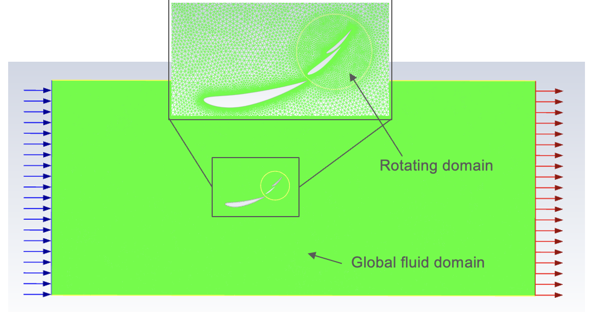
Transient domain setup - a finer-meshed rotating domain (top flap) nested inside the static global fluid domain, coupled through a sliding mesh interface
Velocity & pressure behavior: both mechanisms produce a low-velocity wake when closed, but the Macarena's much larger rotation opens a substantially wider low-velocity region as the flap sweeps through its upright position - consistent with a flap that briefly presents far more frontal area to the flow than a conventional DRS flap ever does. Pressure contours confirm this: a strong pressure differential builds across the flap during rotation, with the rotating flap generating meaningful lift of its own when momentarily fully open, on top of the wing's baseline downforce role.
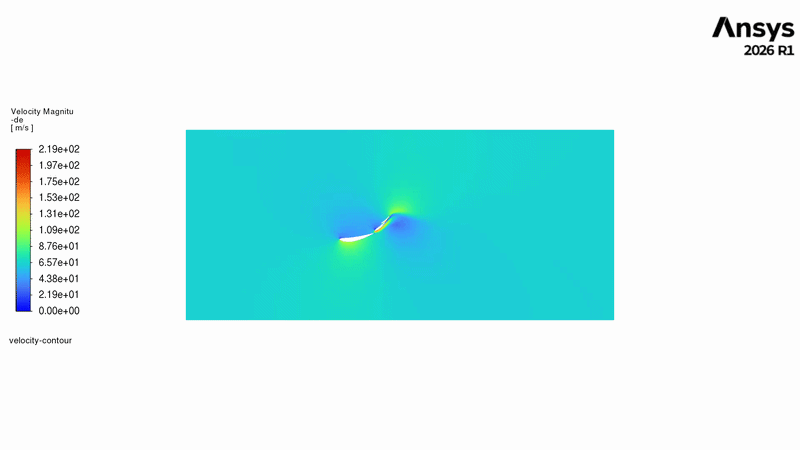

Velocity contour animation across the full open/close cycle - DRS (left) vs. Macarena (right). The Macarena's wake visibly widens and slows far more as the flap sweeps through its upright position.


Static pressure animation, DRS (left) vs. Macarena (right) - the pressure differential across the flap builds sharply as it approaches vertical, then collapses once it clears into its final position
The core finding - the "airbrake spike": tracking downforce and drag coefficient (Cd) over the full 3-second sequence reveals the real story. Both mechanisms reach the expected low-drag state once fully open, and both show smooth, predictable transitions overall - but the Macarena's Cd plot shows sharp, pronounced spikes during actuation that the conventional DRS plot does not. These spikes correspond exactly to the moment the rotating flap passes through perpendicular to the flow: for that instant, the flap stops behaving like an airfoil and behaves like a flat plate - an airbrake - creating a transient drag spike before the flap clears the vertical and drag collapses back down as the flow reattaches around the flipped, low-drag final geometry.
This matters for an actual mechanism, not just the CFD: a conventional 40-50° DRS flap never approaches this perpendicular orientation, so it never generates this airbrake loading. A 230°-rotation mechanism unavoidably sweeps through it twice per activation cycle (once opening, once closing) - meaning the hinge, actuator, and mounting structure have to be designed against a transient structural load case that a conventional DRS system simply does not experience.
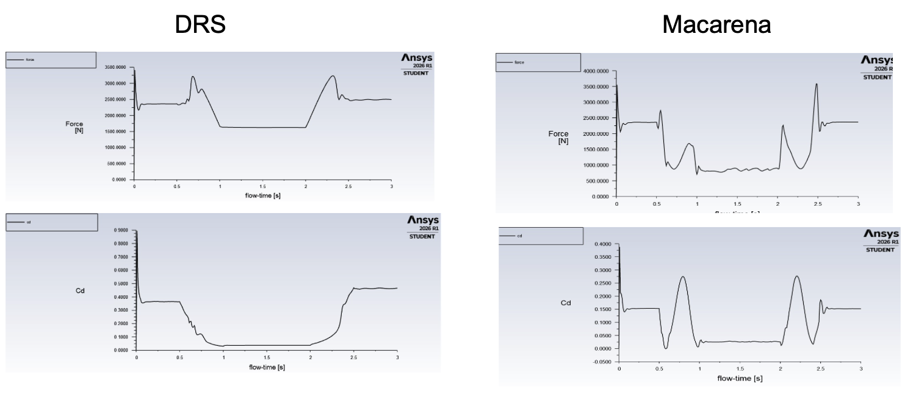
Downforce and Cd vs. flow-time, DRS (left) vs. Macarena (right) - the Macarena's sharp Cd spikes during actuation correspond to the flap's momentary perpendicular "airbrake" orientation; both mechanisms converge to a stable low-drag state once fully open
Vortex shedding: a refined transient run (0.003 s timestep, 3,000 timesteps, frames saved every 2 steps) was used specifically to resolve the wake structure with higher temporal fidelity, and clearly captures a Von Kármán vortex street forming in the wing's wake throughout the sequence. Vortex shedding is mild and localized with the flap closed - the flow stays airfoil-like, guided mostly by the wing shape. It becomes dramatically more violent exactly when the flap is perpendicular to the flow: at that instant the flap acts as a bluff body, forcing violent flow separation from both sides and alternating shedding of strong periodic vortices, widening the wake and driving the largest unsteady loads and pressure fluctuations - and very likely the largest hinge moment - of the entire rotation. Once the flap clears the vertical and settles into its final inverted position, shedding calms again and the wing returns to stable, airfoil-like behavior.
Turbulent kinetic energy and pressure contours at these same three moments tell a consistent story: TKE is low and localized near the trailing edge/wake when closed, spikes sharply and spreads through the wake when the flap is upright, and the pressure field shows a clear high-pressure stagnation zone on the windward face of the upright flap with an oscillating, alternating low-pressure pattern behind it - the pressure-domain signature of the same vortex shedding visible in the velocity field.
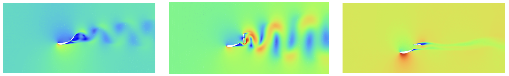
Von Kármán vortex shedding across the rotation - unopened (mild, localized), upright (violent, bluff-body-like separation), fully opened (calm, reattached flow)
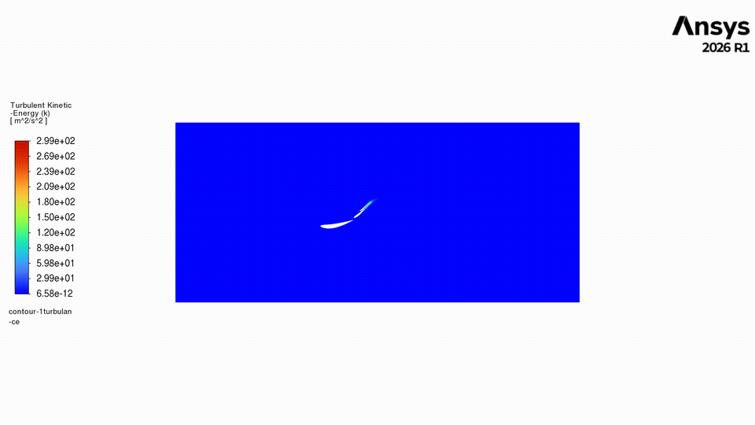
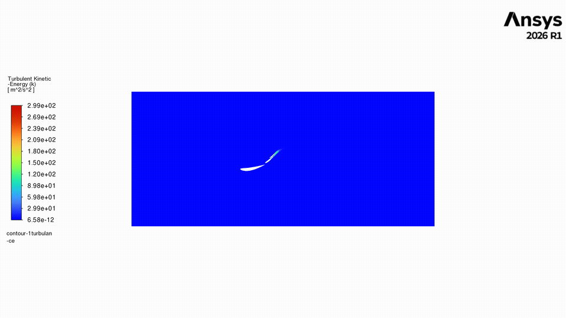
Turbulent kinetic energy animation, DRS (left) vs. Macarena (right) - the Macarena's wake shows a far more energetic, violent shedding event as the flap sweeps through its perpendicular orientation
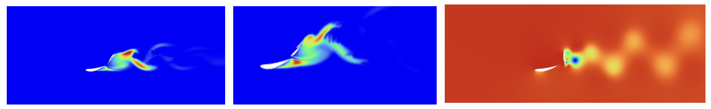
Turbulent kinetic energy at unopened vs. near-upright flap position, and static pressure at the upright position - high TKE and a clear stagnation/wake pressure differential mark the moment of peak unsteady loading
Limitations
2D, simplified geometry, and a modest turbulence model
This is a 2D idealization of a fully 3D device, so endplate effects, wing-tip vortices, spanwise flow, and interaction with the car body are not captured, and forces are likely overstated relative to the real 3D wing. Slot gaps and endplates were also omitted from the geometry itself. On the solver side, k-ω SST does not fully resolve individual turbulent eddies, and the transient run's Courant number of 32.5 is high enough that exact shedding frequency and peak load magnitude should be read as approximate rather than precise. Taken together, these results are trustworthy for flow trend and relative comparison between the two mechanisms, not as an exact load prediction for the real car.
Why Macarena Wins
A deeper drag reduction than DRS, at the cost of a load event a conventional flap never sees
The Cd time histories give a direct answer to why a team would take on the extra mechanical complexity of a 230° rotation instead of a standard 40-50° DRS flap: the Macarena mechanism settles into a lower minimum Cd once fully open than the conventional DRS flap does, and holds that low-drag state over a wider, flatter plateau. Fully inverting the flap removes almost all of its frontal projected area and the pressure drag that comes with it, where a flap that only opens 40-50° still presents meaningful area to the flow even in its "open" state. A deeper, more sustained drag reduction translates directly into more top speed gained per activation - which is exactly the currency that matters for overtaking on an F1 straight.
That advantage isn't free. The same simulation that shows the lower drag plateau also shows the airbrake spike the flap has to pass through twice per cycle to get there - a transient structural load a conventional DRS flap never generates. Read together, the results make the underlying design trade legible: Ferrari is trading a well-defined, short-duration, engineerable load event (reinforce the hinge and actuator for two brief spikes per lap) for a straight-line speed advantage that pays off continuously for the full length of every DRS zone. For a sport where straight-line speed differences of a few kph decide overtakes, that trade is a reasonable one - provided the hinge and actuation system are designed against the actual transient load, not just the two static endpoints.